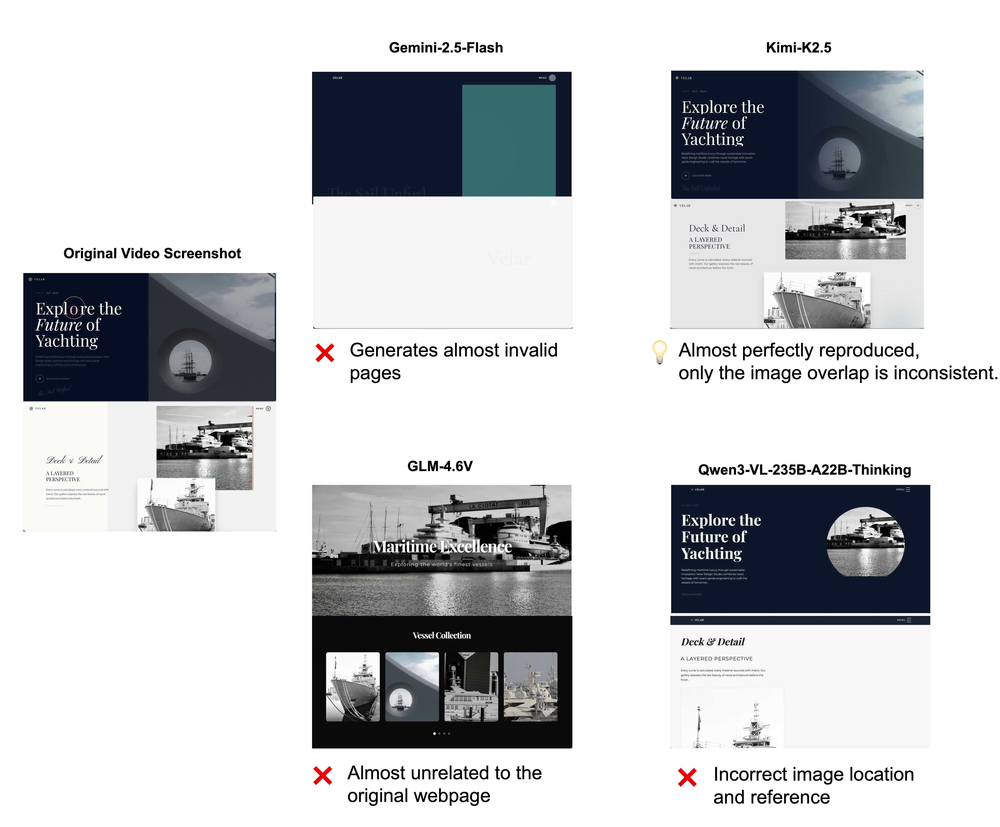
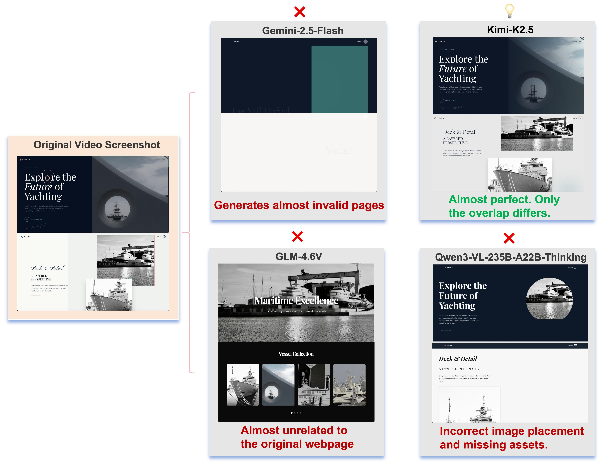

Existing web-generation benchmarks rely mainly on text prompts or static screenshots. WebVR studies a harder setting: recreating a webpage from a demonstration video, where models must recover not only layout and visual style but also transitions, motion, and interaction flow. The benchmark contains 175 synthesized webpages from diverse categories and evaluates outputs with a fine-grained, human-aligned visual rubric spanning aesthetics, persistent UI, section-level layout, and interaction quality. Results on 19 models show that current multimodal LLMs are substantially better at recovering global appearance than dynamic behavior.
Abstract
Overview
WebVR evaluates video-conditioned webpage recreation. Each model receives a reference screen-recording video together with visual assets, and is asked to generate a standalone executable HTML page.
To reduce contamination, benchmark instances are synthesized through structured captioning, semantic re-theming, asset grounding, candidate generation, and rubric-based filtering, instead of directly reusing existing public webpages.
Evaluation is organized into four dimensions: Global Aesthetics (GA), Navigation and Footer (NF), Section-Specific Layouts (SSL), and Interaction and Motion (IM).

Main Results
The strongest models achieve high scores on global style and persistent structure, but interaction and motion remain the main bottleneck.
| Model | GA | NF | SSL | IM | Overall |
|---|---|---|---|---|---|
| Kimi-K2.5 | 87.44 | 89.21 | 79.26 | 60.10 | 79.14 |
| Claude-Sonnet-4.6 | 87.16 | 89.37 | 78.87 | 59.06 | 78.49 |
| GPT-5.2-Thinking | 89.76 | 89.08 | 77.27 | 59.97 | 77.93 |
| Gemini-3.1-Pro-Preview | 88.30 | 87.29 | 77.09 | 56.50 | 76.69 |
| Qwen3.5-397B-A17B | 80.46 | 76.62 | 58.81 | 41.96 | 61.33 |
Across all 19 evaluated models, the average difficulty ordering is GA > NF > SSL > IM, indicating that dynamic interaction fidelity remains substantially harder than recovering static appearance.
Judge Reliability
The rubric-guided evaluation protocol closely tracks human preference. When both code and rendered video are provided to the judge, Kimi-K2.5 reaches 96.0% agreement with human experts on a 50-instance preference study. Without the visual rubric, agreement is substantially lower.
Failure Cases
Representative errors fall into three categories: structural collapse, semantic divergence, and asset misplacement.
Weak models may fail to produce a usable page at all. Mid-tier models often generate plausible but unrelated templates. Strong models usually recover the overall structure while still making errors in fine-grained grounding and spatial placement.

Resources
Citation
@article{dai2026webvr,
title = {WebVR: Benchmarking Multimodal LLMs for WebPage Recreation from Videos via Human-Aligned Visual Rubrics},
author = {Dai, Yuhong and Lai, Yanlin and Huang, Mitt and Guo, Hangyu and Li, Dingming and Peng, Hongbo and Li, Haodong and Zhao, Yingxiu and Lyu, Haoran and Ge, Zheng and Zhang, Xiangyu and Jiang, Daxin},
year = {2026}
}